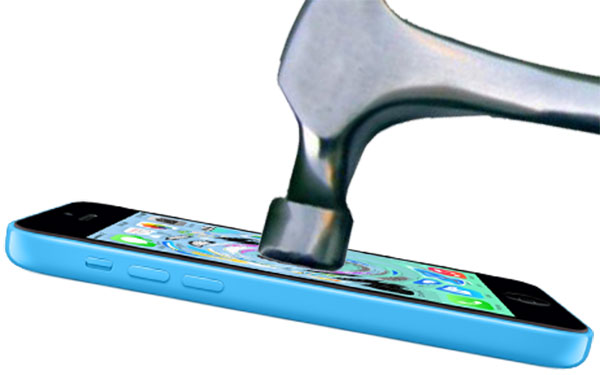
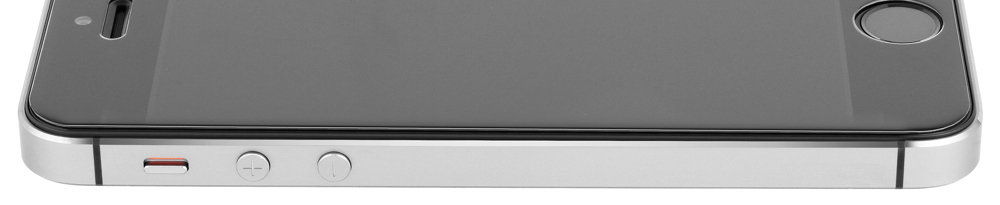

Unlike Anything Else
TechPro is the ultimate protection for your device. Nothing is stronger than our TechPro
screen protectors. Specially designed to absorb and disperse shock waves,
this is the best insurance policy for your device.


See The Difference
A screen protector like no other, TechPro was designed with beauty and functionality in mind.
Clear, thin, and light, you will never even notice that it's there.
Innovation at it's finest,
our TechPro screen protectors are an extension of your already beautiful device. Why cover beauty
with dull plastic? See the difference and decide for yourself.
Is Your Device TechPro Protected?
Find out today, search for your device below.
"Best screen protector by far! Excellent quality, prep materials, and fits great! Very easy to apply unlike so many no glass models."
- sino8r
Amazon Shopper
"Totally clear and easy to clean screen protector. No finger drag like other products. Very easy to install in seconds."
- Mark Moore
Amazon Shopper
"I was at first hesitant with dropping 15 dollars on this after dropping 11 on another tempered glass protector and getting burned by it, but I have to say this is by far the best value for the price. "
- J.V.
Amazon Shopper
"Great product. A must have for the note 10.1. Glass does not interfere with the spen. Glass is hardly noticeable...impressive to say the least."
- Shakedra Howland
Amazon Shopper
" It works and feels at least as good as the actual screen - if not better! "
- Bob Fosters
Amazon Shopper